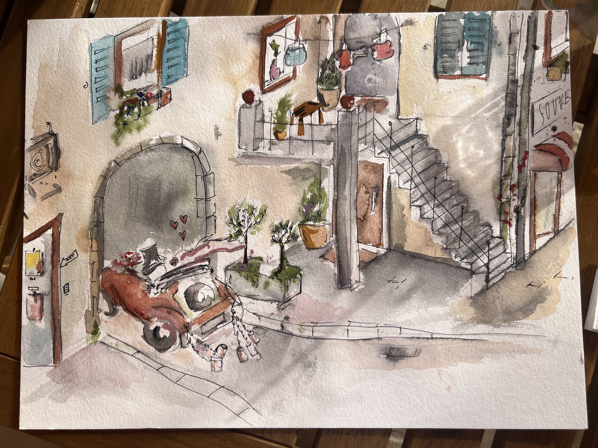
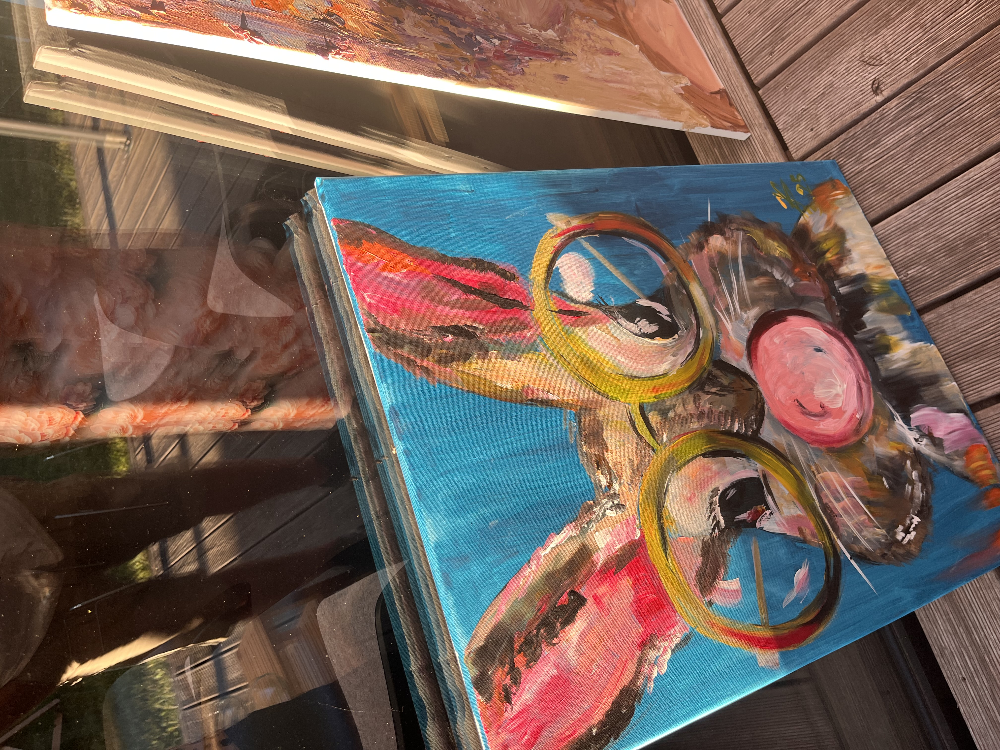
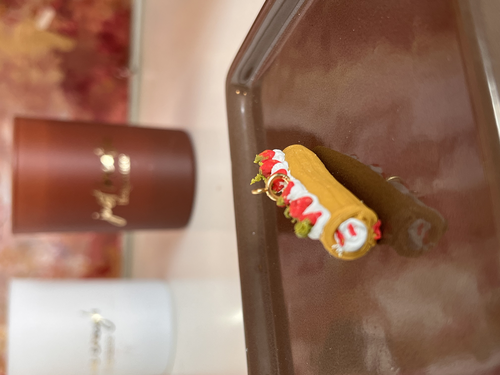
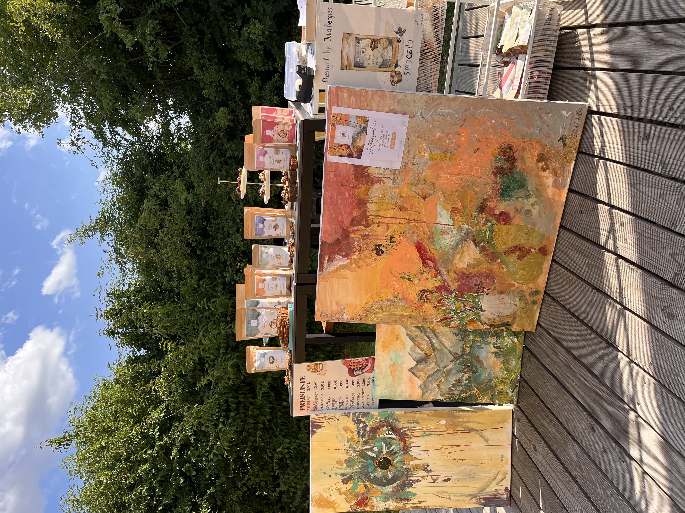
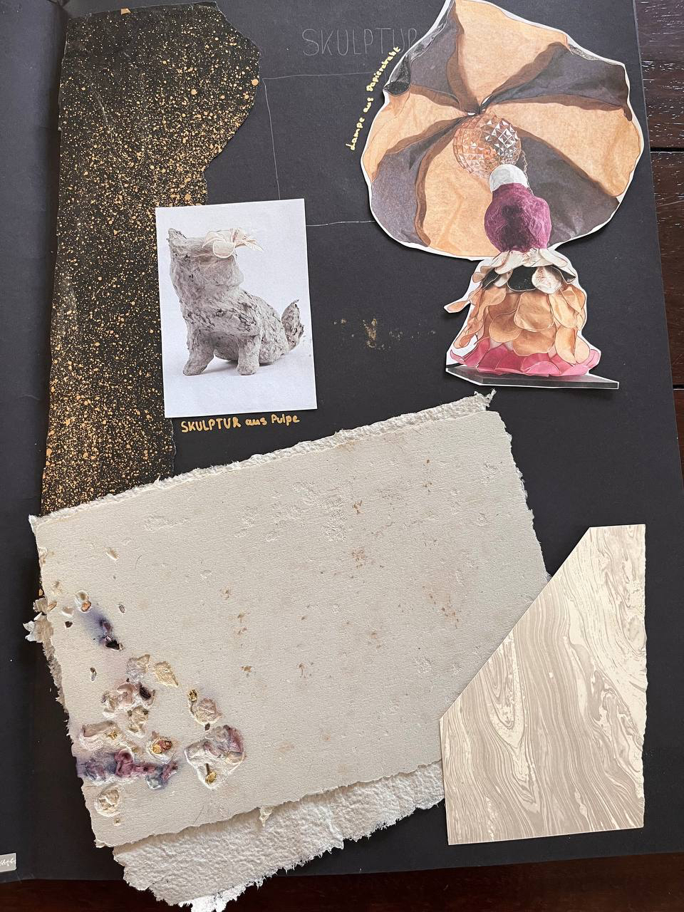
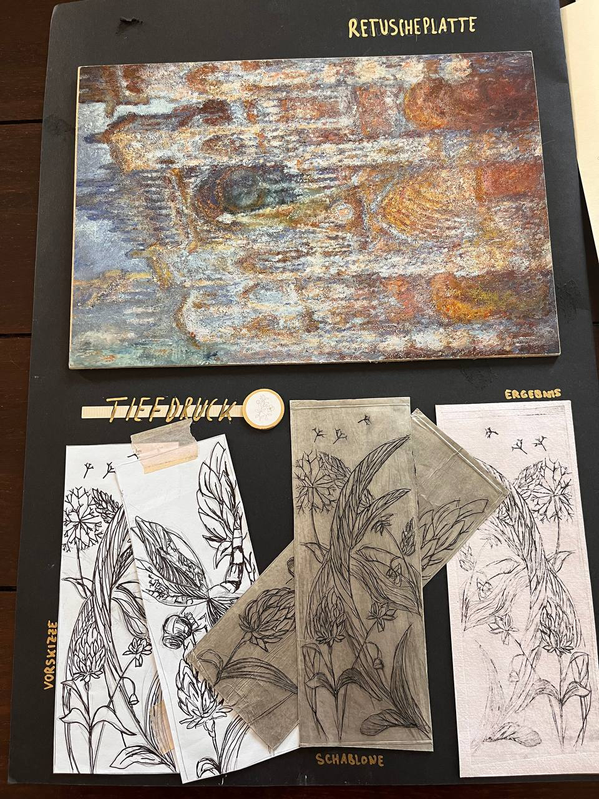
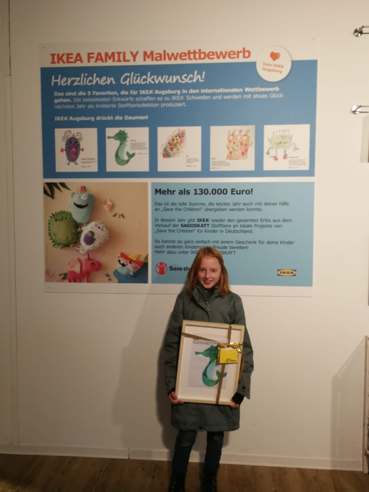

Was vor der Agentur war und was bis heute geblieben ist.
Werke aus meinen eigenen Händen — auf Anfrage bestellbar.







Bevor ich Websites gebaut oder Content produziert habe, habe ich gemalt. Aquarell, Acryl, Modellieren — alles was Farbe hatte und meine Hände beschäftigt.
Ich arbeite eher abstrakt. Nur bei Aquarell gehe ich mehr ins Detail.
Vieles davon steckt heute im Design, das ich für andere Marken mache. Das Auge für Komposition, der Umgang mit Farbe, der Blick fürs Detail — all das kommt aus der Malerei, nicht aus einem Kurs.
Damit du weißt, was auf dich zukommt — bevor der erste Pinselstrich fällt.
80 € pro Stunde.
Farben sind immer inklusive.
Ich arbeite nur mit 50 % Anzahlung.
Rest bei Fertigstellung.
Bei Acryl-Werken kommen die Leinwand-Kosten zzgl. dazu.
Aquarelle kommen ohne Rahmen.
Rahmen bei Acryl und Aquarell zzgl.
Bei Aquarell ist das Papier inklusive.
Immer inklusive — egal ob Acryl oder Aquarell.
Manche Werke sind noch verfügbar, andere entstehen auf Auftrag.
Schreib mir kurz was dich anspricht — ich melde mich mit Details.
Referenzbild kannst du direkt an die Mail anhängen.